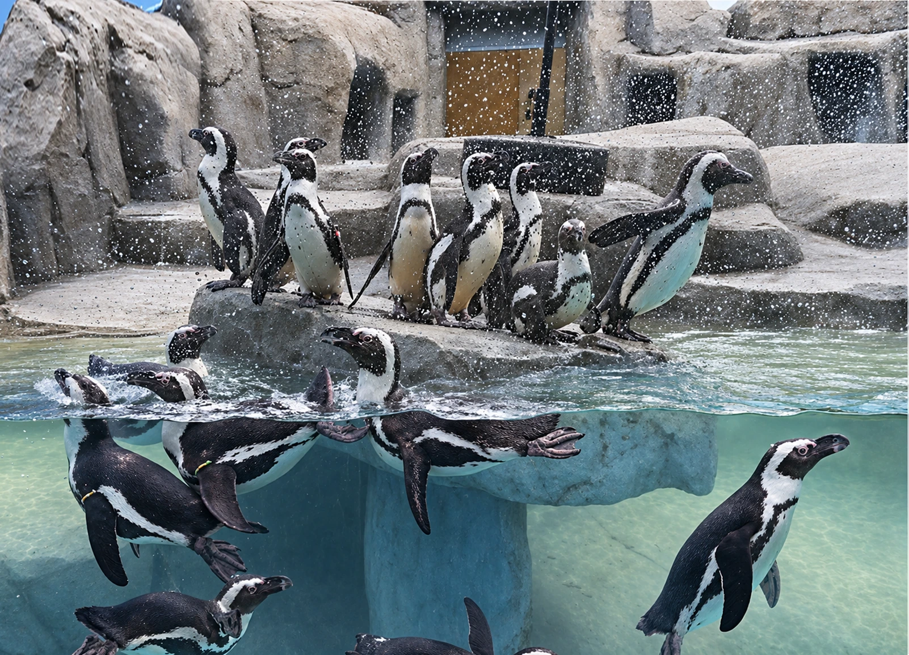
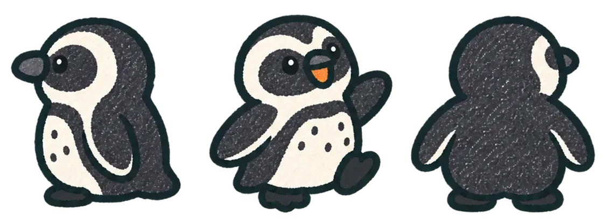
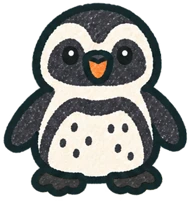
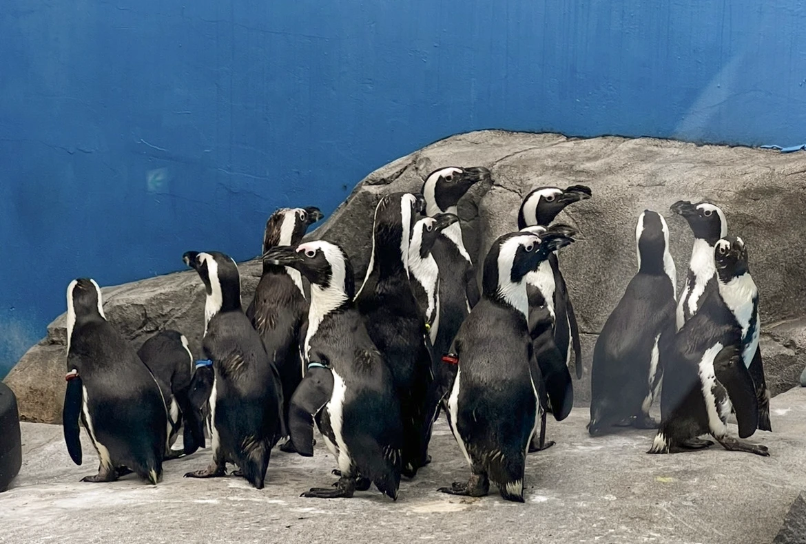
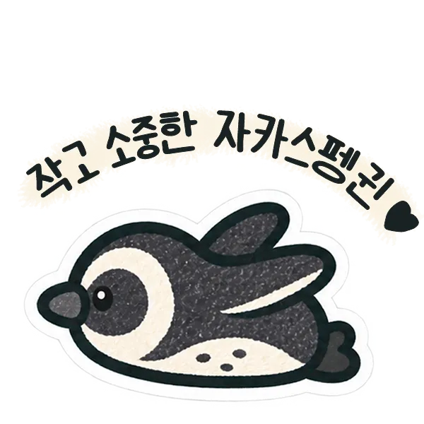
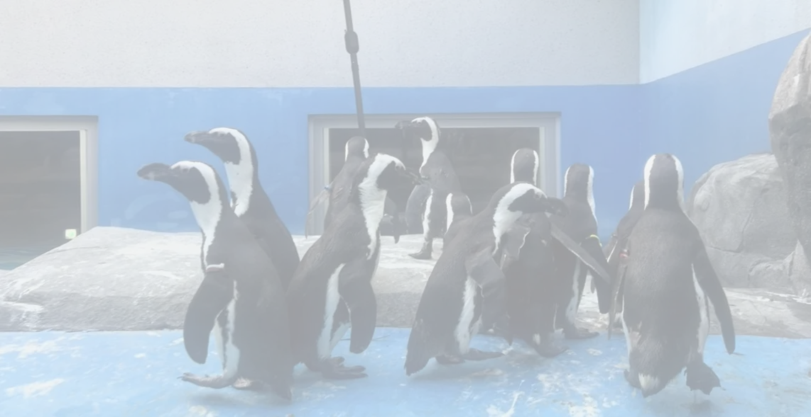
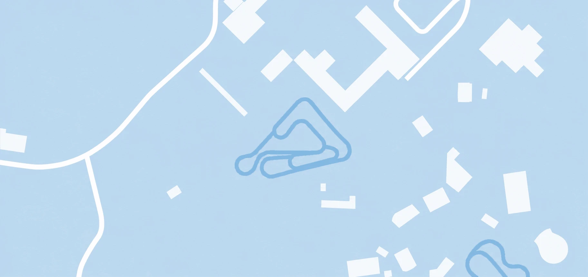

안녕하세요! 서울에서
우치동물원으로 이사 왔어요!
“저희는 아프리카에서 온 자카스펭귄 11마리예요! 이번에 우치동물원으로 이사를 왔어요. 짐 정리는 끝났으니, 저희 보러 오실래요?”

키 70cm, 몸무게 3kg, 귀여움은 무한대!
우치동물원에 새 가족이 생겼어요. 아프리카에서 온 자카스펭귄 11마리가 서울어린이대공원에서 우치동물원으로 이사를 왔습니다. 귀여운 새 이웃들을 따뜻하게 맞이해 볼까요?
01펭귄 프로필
새 이웃 펭귄 프로필 
알려드림

- 이름
- 자카스펭귄(아프리카펭귄이라고도 불러요)
- 고향
- 남아프리카 해안의 따뜻한 바다 근처
- 키
- 성체 약 70cm
- 몸무게
- 3kg 내외 앙증맞은 크기

- 매력 포인트
- 짧은 다리로 뒤뚱뒤뚱! 치명적 귀여움
02멸종위기
그런데 이 귀여운 친구들에게는
마음 아픈 사정이 있어요
자카스펭귄은 2024년 국제자연보전연맹(IUCN) 적색목록에서 ‘위급(CR)’ 등급으로 올라갈 만큼 심각한 멸종위기에 처해 있어요. 한때 수백만 쌍에 달하던 개체가 지난 한 세기 동안 약 97% 줄었고, 국제적 멸종위기종(CITES) 2급으로도 지정됐답니다.
- 2024년 IUCN 적색목록위급(CR)
- 지난 한 세기 개체 감소약 97%
- 국제적 멸종위기종CITES 2급
이유는 사람의 어류 남획으로 먹이가 줄어든 데다 기후 변화까지 겹쳤기 때문이에요. 전문가들은 적극적인 대응이 없으면 10년 안에 야생에서 자카스펭귄이 완전히 사라질 수도 있다고 경고하고 있는데요. 그래서 모두의 관심과 보호가 필요하답니다.

03동물원 약속
펭귄들의 이사를 맞아
우치동물원이 약속해요
- 시민들이 펭귄의 생태와 특성을 가까이에서 관찰할 수 있도록 해요.
- 동물의 건강과 복지를 고려한 사육 환경을 만들어요.
- 멸종위기 야생동물에 대한 관심과 이해를 높일 수 있게 노력해요.
- 야생동물 보전의 중요성을 알리는 체험의 장이 될게요.
04관람 안내
자카스펭귄을
보고 싶다면?

광주 우치동물원 운영 안내
- 위치
- 북구 우치로 677
- 관람 시간
- 연중무휴 ~(폐장 1시간 전까지 입장 가능)
- 입장 요금
- 무료
관람 에티켓
- 사람이 먹는 음식, 주변의 풀을 먹으면 동물이 아파요.
- 돌이나 쓰레기를 던지면 동물이 위험해져요.
- 자는 동물을 깨우지 않게 조용히 관람해 주세요.
- 동물의 관람 시간을 꼭 지켜주세요.
- 전염병 예방을 위해 반려동물은 입장할 수 없어요.